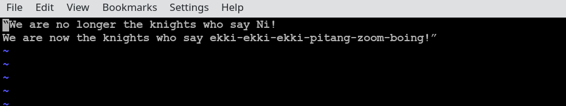
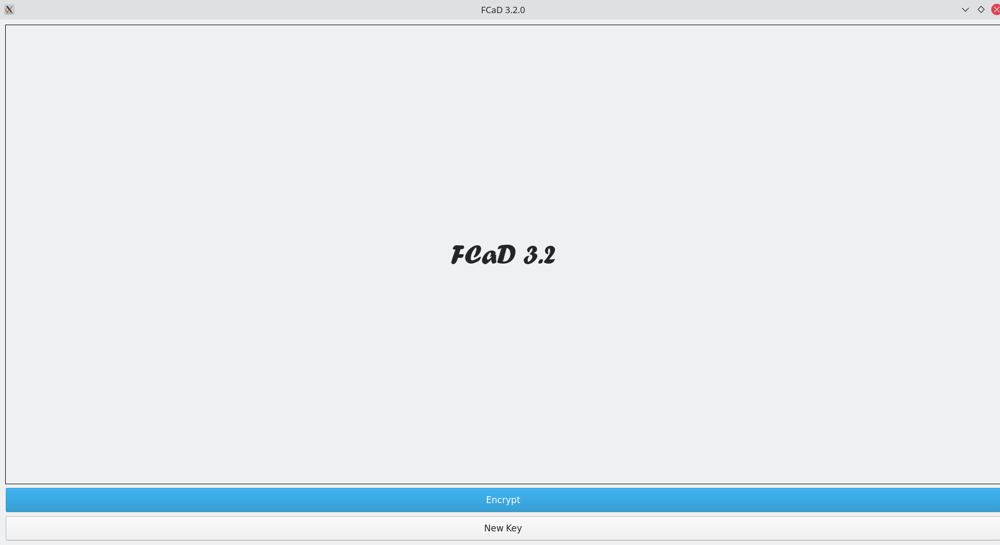
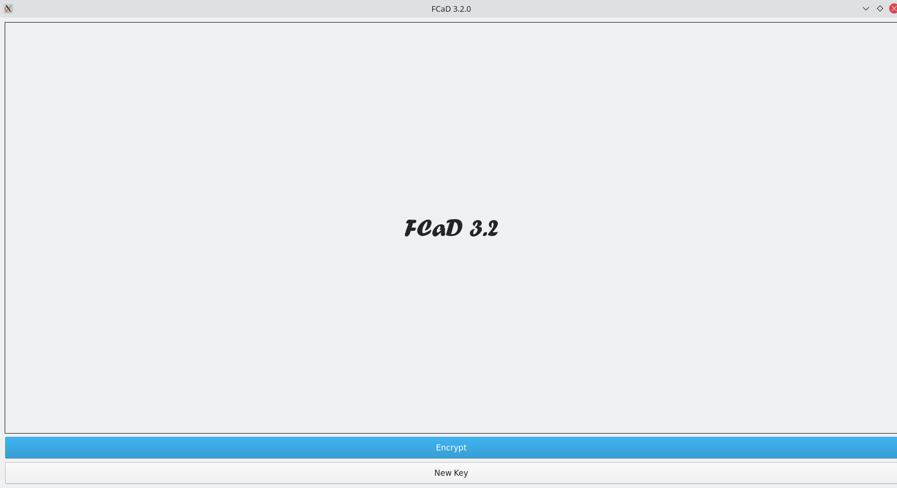
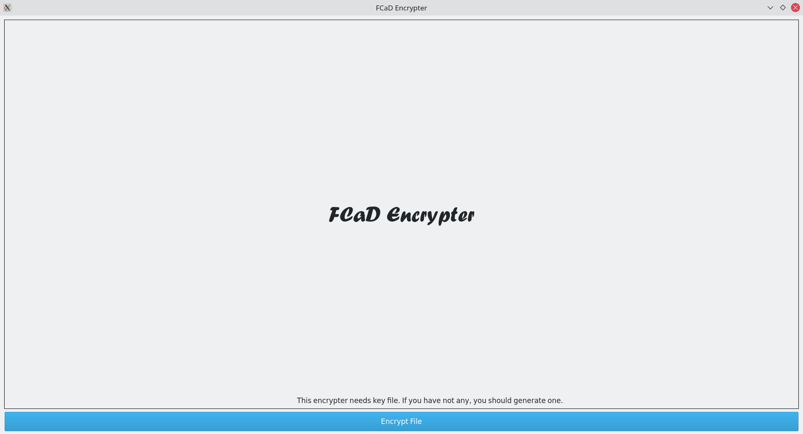
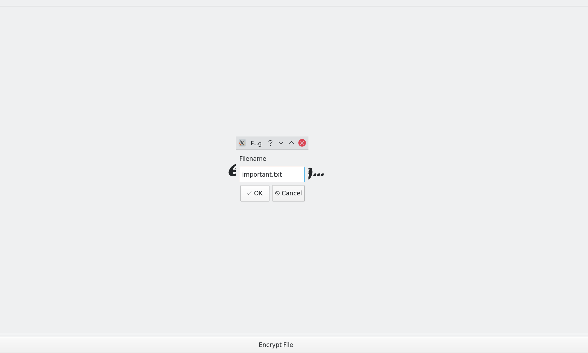
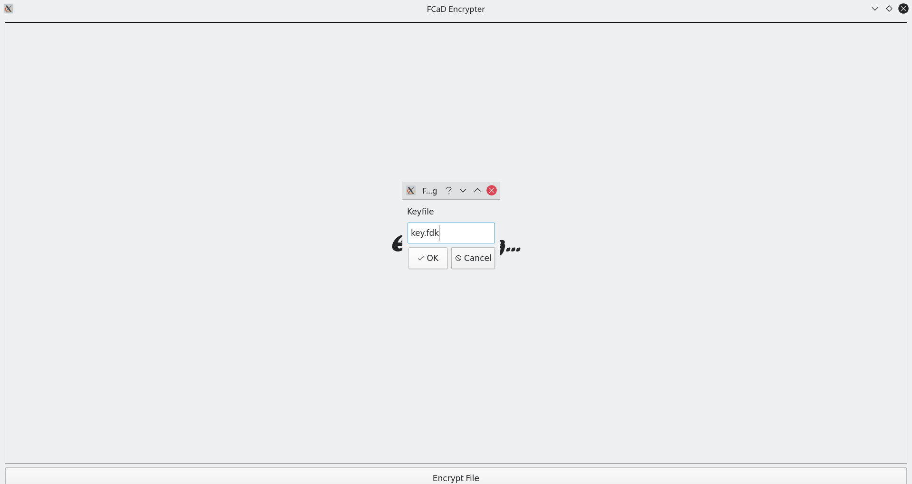
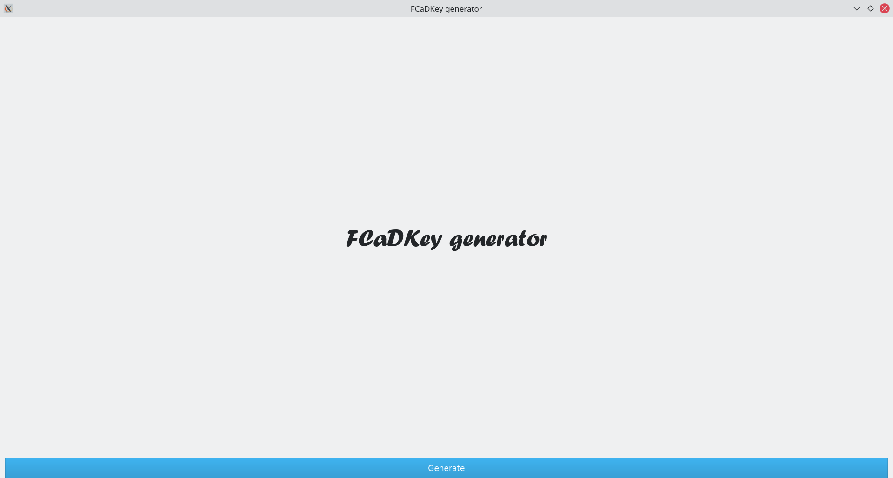
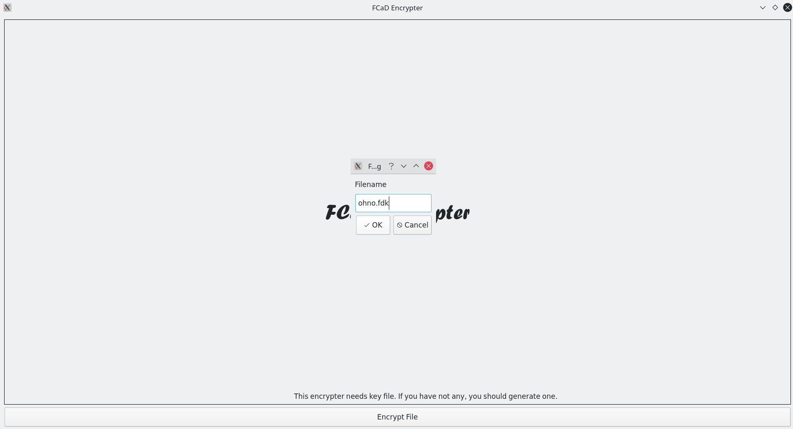
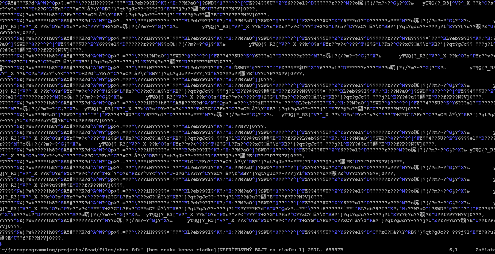

1.0. How to install
File named fcad-v3.2.0.zip will be downloaded.
Go to your download folder and unzip the file.It will probably take few seconds. If not installed(Only on few distributions of linux) install Python 3.8 +. If installed, check version of Python:
[user@hostname ~]$ python --version
If output is less than Python 3.8, update your system or install Python 3.8 + manually.
Now you are ready to encrypt your first file!
1.1.Command line script
[user@hostname ~]$ python runner.py
This is FCaD version 3.2.0.
type "help" for list of commands, press CTRL-D or CTRL-C to exit
FCaD-3.2.0-$
1.1.1 Commands
- new_key
Syntax:new_key [filename]
Generates new key file and writes it into [filename]Example
We want FCaD to generate new key file key.fdk.[user@hostname ~]$ python runner.py This is FCaD version 3.2.0. type "help" for list of commands, press CTRL-D or CTRL-C to exit FCaD-3.2.0-$ new_key key.fdk - encrypt
Syntax:encrypt [filename] [key]
Encrypts [filename] according to [key]Example
We want FCaD to encrypt important.txt according to key.fdk we created just now. [user@hostname ~]$ python runner.py This is FCaD version 3.2.0. type "help" for list of commands, press CTRL-D or CTRL-C to exit FCaD-3.2.0-$ encrypt important.txt key.fdk - decrypt
Syntax:decrypt [filename] [key]
Decrypts [filename] according to [key]This may take long time for large files(e.g. images; databases...)
Example
We want FCaD to decrypt encrypted important.txt according to key.fdk.[user@hostname ~]$ python runner.py This is FCaD version 3.2.0. type "help" for list of commands, press CTRL-D or CTRL-C to exit FCaD-3.2.0-$ decrypt important.txt key.fdk
1.2. FCaD application
This is an unstable feature in development and it has OPEN ISUES
Execute with ./runapp.sh
Only encrypting and generating key files support 
Only encrypting and generating key files support 
Encrypting
- Click "Encrypt". 
- Click "Encrypt File" and write file name in dialog box that opened. Then click "OK"  Dialog box will be replaced by another. Enter key file name and click "OK"  File will be enciphered.
Generating key
- Click "New key". 
- Click "Generate" and write key file name in dialog box that opened. Then click "OK"
Known bug: when you click on "Generate", for some reason will screen change to Encryptor screen
(video)  Key file will be generated {kind=link}